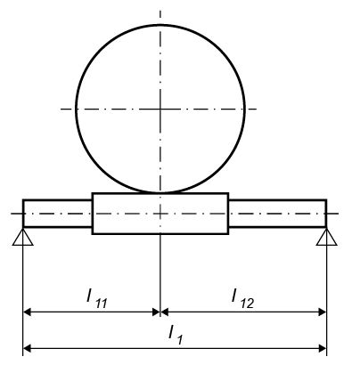

|
|
|


整体蜗杆轴上的距离

图 18.4：蜗杆/蜗轮尺寸标注
| l1 | 整体蜗杆轴上轴承之间的距离 |
| l11 | 从轴承 1 到蜗杆中部的距离 |
您需要这些值来计算挠度安全系数。驱动位置对计算没有影响。
English Original
Distances on the integral worm shaft
Figure 18.4: Dimensioning the worm/worm wheel
| l1 | Distance between the bearings on the integral worm shaft |
| l11 | Distance from bearing 1 to the middle of the worm |
You need these values to calculate the deflection safety. The position of the drive has no effect on the calculation.